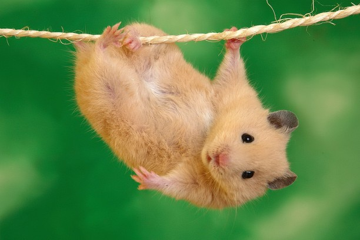

mekeStore
about squirrel
Squirrels get a lot of attention from humans, but not always for good reasons. We tend to dwell on negatives like stolen tomatoes and occupied attics, sometimes failing to fully appreciate the long, mostly harmless, and often entertaining history of squirrels living in our midst. This softer side deserves attention, especially since squirrels are among the most visible wildlife in many big cities and suburbs. They're widespread and widely liked, and despite a knack for mischief, rarely inspire quite the same scorn as other, more garbage-prone city animals like rats, pigeons, or opossums. They're like furry little forest ambassadors, using parks and backyards as their urban embassies.
about Hamster
amsters are rodents (order Rodentia) belonging to the subfamily Cricetinae, which contains 19 species classified in seven genera.[1][2] They have become established as popular small pets.[3] The best-known species of hamster is the golden or Syrian hamster (Mesocricetus auratus), which is the type most commonly kept as pets. Other hamster species commonly kept as pets are the three species of dwarf hamster, Campbell's dwarf hamster (Phodopus campbelli), the winter white dwarf hamster (Phodopus sungorus) and the Roborovski hamster (Phodopus roborovskii). Hamsters are more crepuscular than nocturnal and, in the wild, remain underground during the day to avoid being caught by predators. They feed primarily on seeds, fruits, and vegetation, and will occasionally eat burrowing insects.[4] Physically, they are stout-bodied with distinguishing features that include elongated cheek pouches extending to their shoulders, which they use to carry food back to their burrows, as well as a short tail and fur-covered feet.
click photo to see video
about Quokkas
Description: Quokkas are one of the smallest wallaby species in Australia. They have thick, coarse, grey-brown fur; short, rounded fluffy ears, a tail 24–31 cm long and shorter hindlegs than other macropod species.
Diet: Quokkas are herbivores and eat native grasses and the leaves, stems and bark of a variety of plants. They prefer browsing on new, young growth.
In the wild: On Rottnest Island, Quokkas appear to live in territories with the areas defended by dominant males. In other areas, territories are not as evident and larger, overlapping groups of 25–150 adults have been known to form around water soaks. Sheltering in dense vegetation during the day, Quokkas create their own pathways for feeding or escaping predators.
Threats: Quokkas were once abundant on the Australian mainland but with the arrival of the dingo around 3,500 years ago and then foxes in the late 1800s (neither of which reach Rottnest) their numbers were drastically reduced. Today they are showing signs of recovery on the mainland thanks to the Department of Parks and Wildlife’s feral-proofing operations